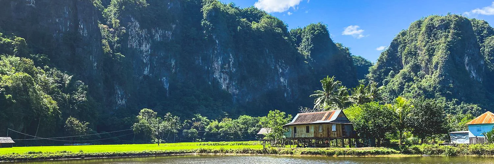

Selamat Datang di Kampoeng Karst Rammang-Rammang!

Kampoeng Karst Rammang-Rammang menghadirkan keindahan pegunungan karst, sungai, dan suasana alam yang asri. Tempat yang tepat untuk menikmati keindahan alam dan menciptakan momen berkesan.
TENTANG PULAU RAMMANG-RAMMANG
Rammang-Rammang merupakan kawasan wisata alam yang terkenal dengan bentang alam karstnya. Keindahan pegunungan batu, sungai, dan suasana pedesaan membuat kawasan ini menarik untuk dikunjungi.
SEJARAH
Nama Rammang-Rammang berasal dari bahasa Makassar yang berarti awan atau kabut. Nama tersebut berkaitan dengan kawasan yang sering diselimuti kabut, terutama pada pagi hari.
Rammang-Rammang merupakan bagian dari kawasan karst Maros-Pangkep yang terbentuk melalui proses geologi selama jutaan tahun. Kawasan ini juga memiliki gua-gua prasejarah yang menyimpan bukti kehidupan manusia pada masa lampau.
Seiring waktu, keindahan alam dan nilai sejarahnya membuat Rammang-Rammang berkembang menjadi salah satu destinasi wisata alam yang dikenal di Sulawesi Selatan.
KEUNIKAN DAN DAYA TARIK
Keunikan Rammang-Rammang terletak pada formasi pegunungan karst yang menjulang di tengah kawasan hijau. Perpaduan antara batuan karst, sungai, pepohonan, dan persawahan menciptakan pemandangaan alam yang khas.
Rammang-Rammang cocok bagi pengunjung yang ingin menikmati suasana alam, menyusuri sungai, menjelajahi kawasan karst, dan mengabadikan keindahan alam melalui fotografi.
- Pegunungan karst yang indah
- Pemandangan sungai
- Pemandangan alam yang menarik
- Lingkungan pedesaan yang asri
- Cocok untuk fotografi